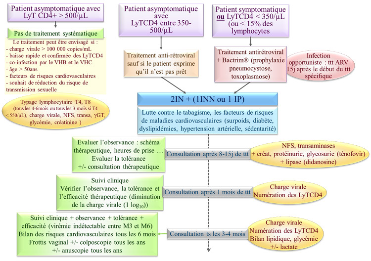

Les informations présentes dans cette page sont données à titre indicatif.
En cas d'utilisation des ces informations dans un but médical, vous devez vous en référer au Rapport 2010 sur la prise en charge médicale des personnes infectées par le VIH sous la direction du Pr. PatrickYéni
MemoBio©
Traitement antirétroviral (12-18 mois) en cas de
symptomatologie sévère et durable et/ou d’immunodépression confirmée.
Surveillance immuno-virologique tous les 3-6mois en fonction de la pente de décroissance des lymphocytes T CD4+ et du niveau de la charge virale.
Le traitement antirétroviral sera alors débuté :
- si le patient est
symptomatique
-
si les lymphocytes T CD4+ sont < 200/mm3 ou < 15% des lymphocytes
totaux
- dans certaines conditions si la charge
virale est > 100 000 copies/mL
Si les lymphocytes T CD4+ sont entre 200-350/µL :
c'est la période où le
traitement doit être instauré.
Le moment dépend de l’état de préparation du
patient, de la vitesse de décroissance des lymphocytes T CD4+ et de la
valeur de la charge virale plasmatique.
En présence d’une infection opportuniste : le traitement antirétroviral est débuté après 2-3
semaines de traitement de l’infection opportuniste après avoir analysé
l’efficacité et la tolérance de ce traitement.
Obtenir en quelques semaines une charge virale en
dessous du seuil de détection.
Si la charge virale est toujours détectable
après 3 mois de traitement, il faut réaliser une surveillance rapprochée
5 classes thérapeutiques sont aujourd'hui
commercialisées :
IN : inhibiteurs nucléosidiques
de la reverse transcriptase
INN : inhibiteurs non nucléosidiques
de la reverse transcriptase
IP :
inhibiteurs de la protéase
Inhibiteurs de la fusion
Inhibiteurs de l'intégrase
Des essais sont en cours sur l'utilisation
d'immunothérapie : IL-2, interféron pégylé.
Le traitement le plus souvent utilisé en cas d'infection par un virus non muté est l'association de 2 IN à 1 INN ou 1 IP (potentialisé par une faible dose de Ritonavir (/r) : effet booster par inhibition enzymatique du cytochrome P450 qui dégrade l’IP) :
2 IN |
+ |
1 INN |
ou |
1 IP |
||
| Zidovudine ou Ténofovir ou Didanosine ou Abacavir |
+ |
Lamivudine ou Emtricitabine |
Efavirenz ou Nevirapine |
Fosamprénavir/r ou Indinavir/r ou Lopinavir/r ou Saquinavir/r |
||
Autres choix possibles :
-
2IN + Nelfinavir
-
Stavudine + Lamivudine + 1INN ou 1 IP/r
-
Zidovudine + Didanosine + 1 INN ou 1 IP/r
- Zidovudine + Lamivudine + Abacavir (Trizivir®)
Dépend de :
- l'efficacité virologique
- la nature, l’intensité et la fréquence des EI
- l'existence de facteurs de risque cardio-vasculaire
- les perspectives de procréation
- les co-infections VIH/VHC ou VIH/VHB
- les traitements en cours susceptibles d’interférer avec les antirétroviraux
- Toxoplasmose et
pneumocystose : une prophylaxie est instaurée à
partir d’un taux de lymphocytes T CD4+ < 200/µL.
La prophylaxie ne sera arrêtée que si le taux de
lymphocytes T CD4+ est supérieur à 200/µL.
- Pathologies opportunistes sans prophylaxie spécifique : cryptosporidiose, leuco-encéphalite multifocale
progressive : débuter un traitement antirétroviral le plus rapidement
possible
- Tuberculose et mycose : l’instauration d’antituberculeux et d’antifongiques doit faire étudier le risque d’interactions médicamenteuses avec les antirétroviraux.
- LMNH : si le patient n’a pas de déficit immunitaire
majeur : même stratégie que le sujet séronégatif pour le VIH.
- Dysplasie cervicale utérine : réaliser un examen
gynécologique avec frottis et si possible une colposcopie tous les ans chez
toutes femmes VIH +.
- Dysplasie anale : anuscopie tous les ans en cas de
rapports sexuels anaux réceptifs non protégés
- Lutter contre le tabagisme : substituts nicotiniques,
consultation avec un tabacologue.
- Evaluer les facteurs de risque de maladie
cardio-vasculaire : tabac, hypertension artérielle, obésité, diabète,
dyslipidémie, antécédents familiaux précoces de maladie coronarienne.
- Instaurer des mesures
hygiéno-diététiques voire traitement par normolipémiants.